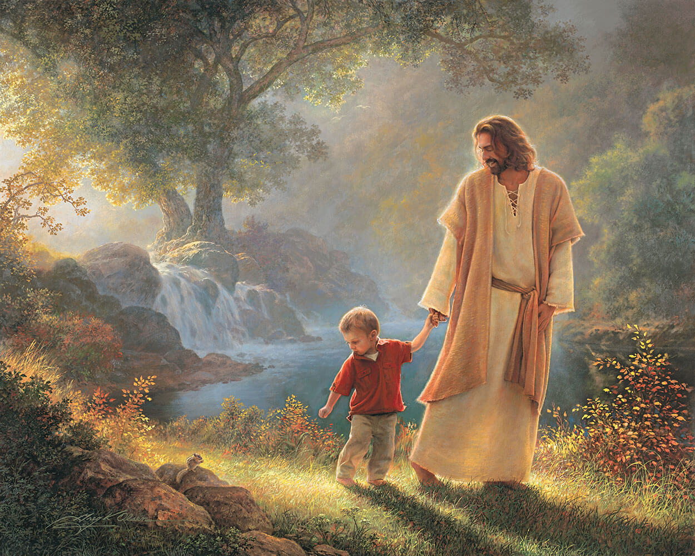
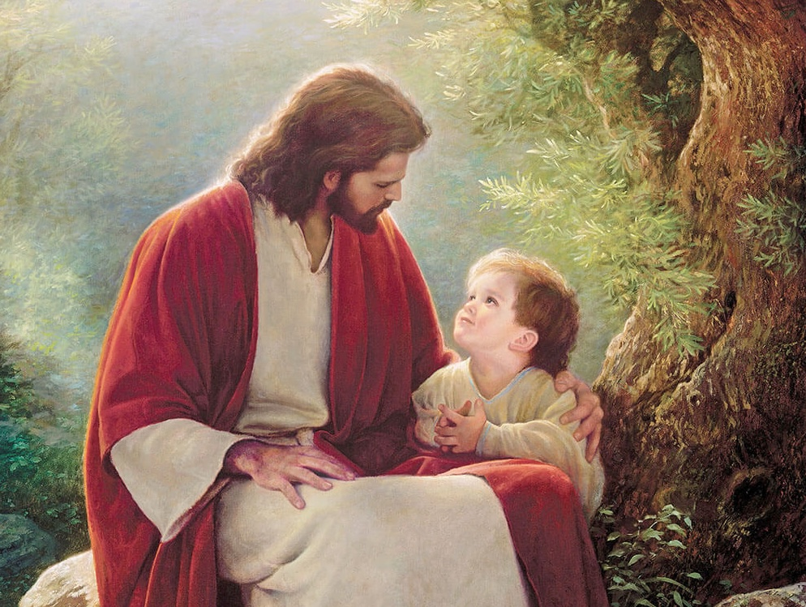
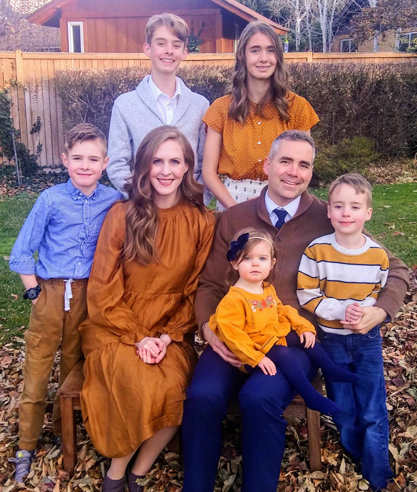

Upcoming Activities & Performances
Here's what's coming up for our Primary. Check out our ward website for other events.
- Sunday
- Activities
- Special / Ward-Wide Event
-
JULY TBAActivity
Valiant Activity Day Camp
TBA
-
Aug 23Sunday
Ward Conference
Stake leaders visit to share uplifting messages with our families as we sustain church leaders.
-
SEP 02Wednesday
Ward Activity - International Market
Fun international market with booths and get together for the ward.
-
SEP 27Sunday
Primary Program
Showcasing some of the things we've learned in primary this year. Thanks for supporting your kids!
-
NOV 15Sunday
Stake Conference
No primary today!

Singing Time
Practicing at home can help songs stick!
🎵 Casual Listening
All 2026 Songs Playlist
View all the songs recommended this year from Come, Follow Me →
🎵 Explore
Church Music Library
Explore and listen to the church's wide array of music. →
This Year's Songs
Each link opens the official lyrics or sheet music on churchofjesuschrist.org.
February
March
April
May
June
July
August
September
October
November
December

This Week's Gospel Study
Follow along with the family at home. Tap below for the current Come, Follow Me lesson on the official Church website.
This Week's "Come, Follow Me" Lesson → Come, Follow Me Resources →Meet Your Leaders
We love your kids and are here to help them feel God's love!
Let us know if you have any questions.

📞 To contact a member of the presidency or the music leader, please look up our details directly in the Church Tools app or the online Ward Directory.